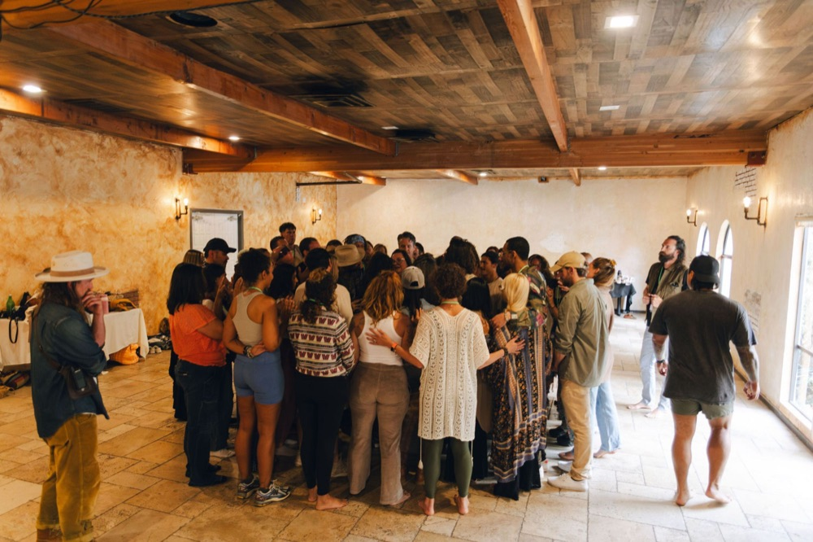
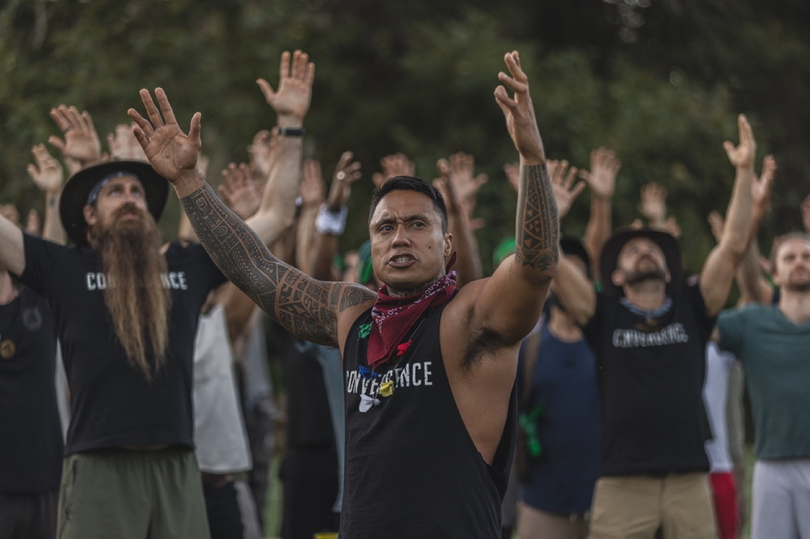

Give
Support the work beyond the ceremony.
Much of what I do is carried by two organizations. Your gift to either one goes directly to the people, land and programs they serve.

A church and school
For the Sacred
For the Sacred envisions a world where people from all backgrounds come together to celebrate our shared humanity and our deep connection to the Earth. It embraces the diversity of spiritual practices, languages and traditions across Indigenous and contemporary cultures, while fostering understanding, respect and collaboration.
Mission. To nurture compassionate, resilient communities rooted in spiritual ecology, the recognition that all life is interdependent. Through holistic education, we help people reconnect with nature, live sustainably, and contribute their gifts toward the healing of the planet.
Vision. Spaces where wisdom traditions, ecological knowledge, cultural heritage and practical skills flourish side by side: a sanctuary for learning, growth and regenerative living, and a new story of belonging, reciprocity and sacred relationship with all of life.
Donate to the visionDonations are received securely through Zeffy by First Wave Ministry Trust.

501(c)(3) nonprofit
Makoa Quest
Makoa Quest restores and celebrates land through Indigenous culture and integrated science. For years it has run outdoor education camps and cultural immersions for Maui youth, along with experiences for visitors. Today its work centers on cultural immersion, regenerative agriculture, fishpond and forest restoration, and programs for youth and adults.
Guided quests, including kayak and jungle tours and ʻawa ceremony, help fund free cultural programming for people in need on Maui. At the core of the work are pilina (relationships), kuleana (responsibility) and lōkahi (unity).
Kale Kaʻalekahi, President